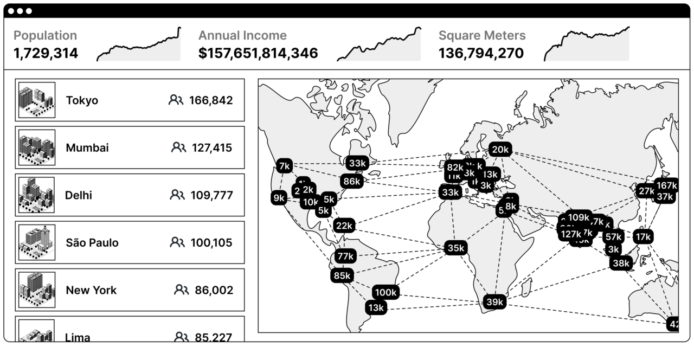

한 그림으로 보는 네트워크 국가🔗

그림으로 보는게 도움이 될 것이다. 위의 대시보드는 백만 인구의 네트워크 국가가 지도상에 어떻게 나타날지를 보여준다. 구체적으로, 이 대시보드는 170만 인구, 1570억 달러가 넘는 연간 세입, 그리고 1억 3600만 평방미터의 공간을 점유하고 있는 네트워크 국가를 묘사하고 있다.
가장 먼저 눈에 띄는 사실은 네트워크 국가는 국민 국가(nation state)처럼 물리적으로 중앙화되어 있지도, 도시 국가처럼 규모가 제한되어있지도 않다는 것이다. 네트워크 국가는 지리적으로 탈중앙화되어있으면서 인터넷으로 연결되어있다.
두번째는, 당신도 충분히 당신의 컴퓨터로 이런 종류의 국가를 시작할 수 있다는 것이다. 즉, 마치 페이스북이 한 사람의 랩탑으로부터 성장했던것 처럼, 물리적 영토의 군도(群島)를 전세계에 가진 백만인구의 네트워크 국가도 일인 스타트업 사회로 시작할 수 있다는 것이다. 다음의 gif 처럼:

세번째로는 네트워크 국가에 있어 실시간 국세조사(census)가 얼마나 핵심적인지에 주목해야 한다. 위에 제시된 대시보드는 해당 국가가 인구, 연간 세입, 그리고 점유 부동산의 '성장'에 초점을 맞출 수 있도록 코인, 기업, 국가들로부터 나온 개념들을 종합해 보여주고 있다.
지속되는 성장은 일종의 현재진행형 국민투표, 즉 국가 내에 머무르는 사람들과 국가 밖으로부터 이주해오려는 사람들의 신임 투표이다. 거칠게 말해, 해당 국가의 가치에 동의하는 이민자들을 끌어들이는 국가가 성공적인 네트워크 국가이고, 이민자들을 잃는 국가가 실패하는 네트워크 국가이다.
이것은 각 네트워크 국가들이 무한히 성장해야 한다거나, 모든 국가가 같은 부류의 사람들을 받아들여야 한다는 뜻이 아니다. 오히려 이것은 사람들이 합류하기 원하는 훌륭한 사회를 구축하는 데 모든 네트워크 국가들이 역점을 두고 있다는 것을 의미한다. 서로 다른 네트워크 국가들은 서로 다른 지표들에 주목할 것이다; 시민들의 기대수명을 연장시키는데 초점을 맞추는, 또는 증명가능하게 오른쪽으로 소득분포를 이동시키는 것을 겨냥한 네트워크 국가를 상상해보라. 당신은 당신이 측정하는 것을 얻게 된다 (You get what you measure).